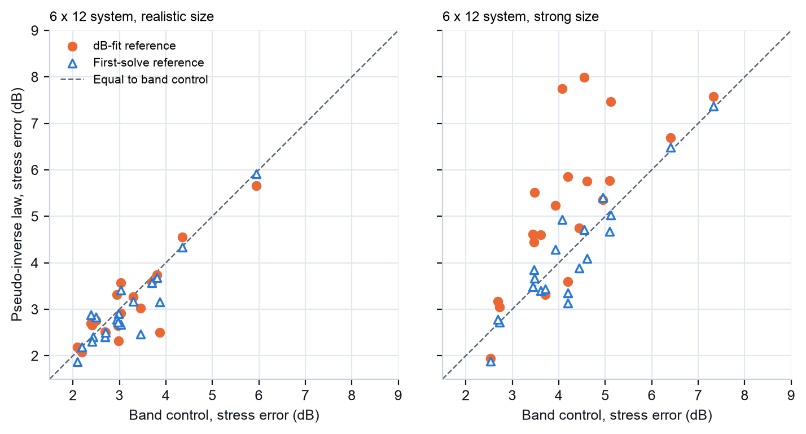
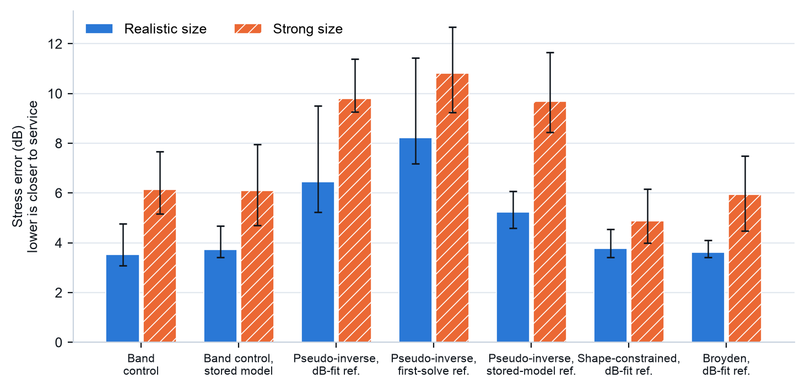
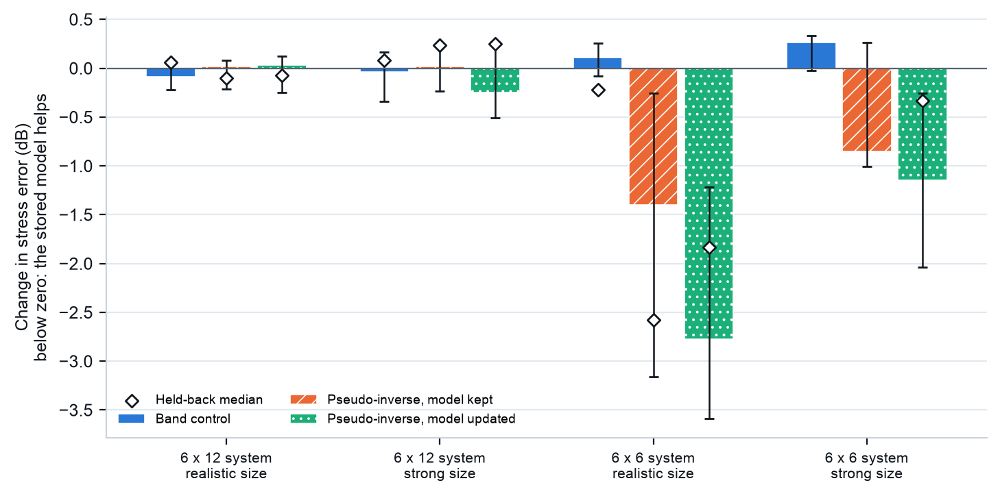
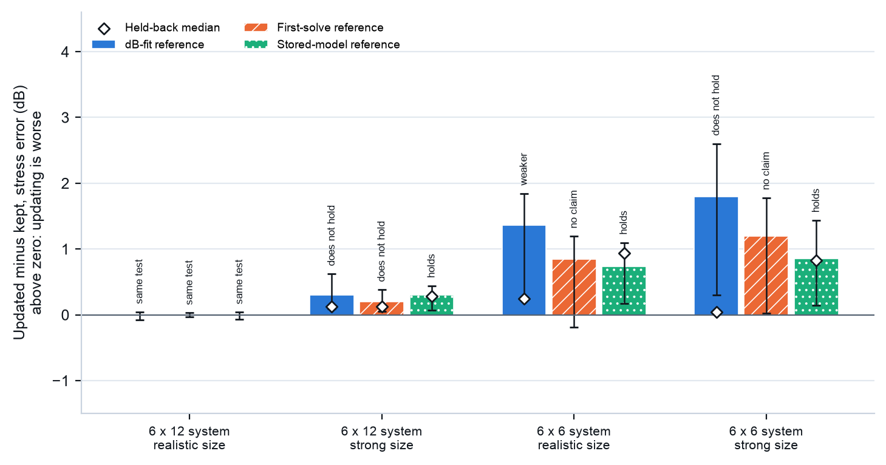
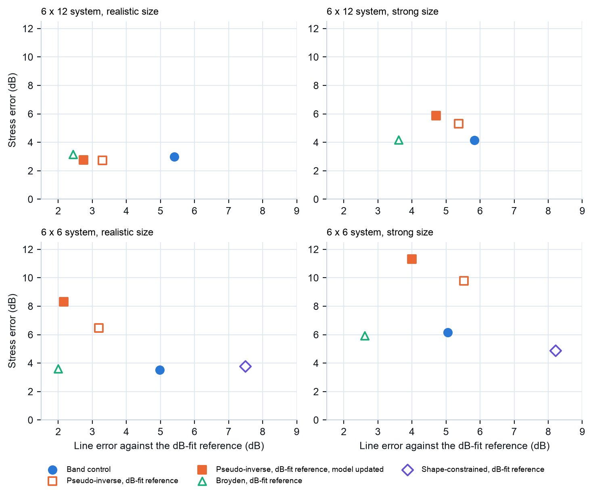
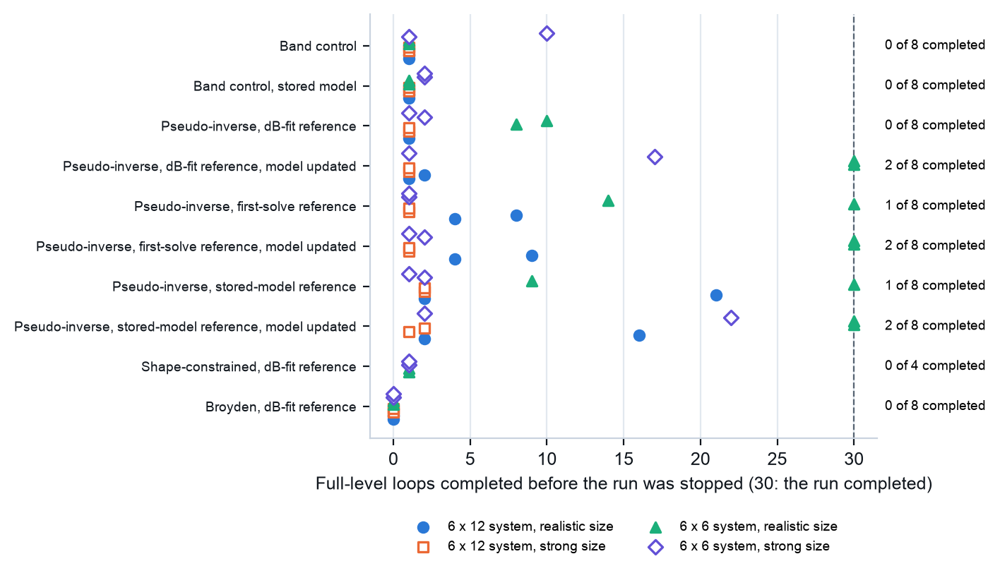

Hertzforge Journal
A Banded Specification: Convert It to Narrowband, or Control the Band? A Closed-Loop Simulation Study
Research Article
EvidenceSimulator. Closed-loop runs through Hertzforge's control service on its simulator, on 20 structures of the Open Benchmark Set's MIMO Random suite (version 0.2), 10 of them on both of two systems, at two sizes of level-dependent change, one run per case, with claims written by a fixed rule and tested on five held-back structures by an independent audit. No hardware test was made.
Abstract
A multi-shaker random vibration specification is often written in bands: one level per one-third-octave band at each control gauge. A test operator can run it in two ways: measure the system’s frequency response at low level, convert the bands once into a narrowband reference and run narrowband control to it, or control the band levels directly. This article compares the two closed loop on Hertzforge’s simulator, on 20 structures of the Open Benchmark Set, 10 of them on both of two systems, with Hertzforge’s band-average law for band control and three line-by-line laws on the converted reference. A conversion from a model measured at full level, the model finder of an earlier article, was run beside two low-level conversions. With more control gauges than shakers, band control and every converted reference were the same test on average at the realistic size of level change. At the strong size the reference converted by a fit in decibels put the stress 0.82 dB further from service than band control, and the reference converted from the band-average law’s own first solve did not: the gap depends on how the conversion is made, not on converting. With as many shakers as control gauges, the default pseudo-inverse law on any converted reference put the stress 1.7 to 6.1 dB further from service than band control, an over-test, while two other laws on the same reference showed no such excess. No claim that held put a converted reference closer to service than band control, and band control needed less drive and over-tested narrow peaks less. For a specification written in bands the article recommends band control as the default way to run the test. Of 136 claims written by rule, 113 held on five held-back structures, 15 were weaker and 8 did not hold. Every result is from runs with the controller’s checks widened; at their defaults, which are conservative by design, 68 of 76 runs stopped for the operator to look before going on. Band control stopped on a divergence check that judges each control’s error line by line, which a band law does not try to reduce; the article recommends that, for a band law, the check judge the band error instead, at the same thresholds.
Summary
A random vibration specification for a multi-shaker test is often written in bands: one level in each one-third-octave band at each control gauge, with no levels for single frequency lines and no cross spectra between gauges. A band allows for the small differences between one unit and the next, and between one test setup and another. Many controllers, though, control line by line and need a reference at every frequency line. A test operator with such a specification has two ways to run it:
- Convert it. Identify the system at low level (measure its frequency response with the article in its test setup), use that measurement once to turn the band levels into a narrowband reference with the article’s own peaks and valleys and the cross spectra that go with them, and run the test closed loop to that reference with an ordinary narrowband control law.
- Control the band. Run the test with a law that corrects the band levels and leaves the line structure to the article.
This article compares the two on Hertzforge’s simulator, closed loop, on structures of the Open Benchmark Set whose joints soften as the level rises. Band control is run with Hertzforge’s band-average law (band_average, Brandon Zwink’s law). The converted reference is run with the default pseudo-inverse law, the shape-constrained law and the Broyden congruence law. Two conversions were made from the low-level measurement, and one from a frequency response measured at full level and stored, the model finder of an earlier article (Cross 2026a). Every result below is a claim written by a fixed rule before five held-back structures were run, with the verdict an independent audit gave it on those five.
What held:
- More control gauges than shakers, realistic level change: the same test. Band control and narrowband control to a reference converted once were the same test on average, within 0.5 dB in element stress error, for every conversion and with the model kept or updated during the run (6 shakers and 12 control gauges, 20 structures). All of these claims held on the held-back structures.
- More control gauges than shakers, strong level change: how the reference is converted matters, not converting. The reference converted by a fit in decibels put the stress 0.82 dB further from service than band control (17 of 20 structures; 0.64 dB on the held-back structures). The reference converted from the band-average law’s own first solve was the same test as band control. That conversion differs from the decibel fit in three ways (it fits in power, in one-sixth-octave bands, with the law’s own threshold rule), and the study does not separate them. On the square system the first-solve reference was the worse of the two.
- As many shakers as control gauges: the default law over-tests. On the square system (6 shakers, 6 control gauges, 10 structures) the default pseudo-inverse law put the stress 3.3 to 6.1 dB further from service than band control on every reference converted from the low-level measurement, an over-test, on 9 or 10 of 10 structures. The shape-constrained law and the Broyden law on the same converted reference were 2.6 to 5.5 dB better than the default law. The excess belongs to the default law on a square system, not to the conversion, with one reservation: the controller’s drive-change limiter acted far more often on the laws that show no excess, and the study cannot say how much of their restraint is the limiter’s.
- The stored full-level model made no difference with more gauges than shakers. On the square system it recovered part of the default law’s over-test wherever the rule wrote a claim: 1.4 dB with the model kept and 2.8 dB with it updated at the realistic size, and 1.15 dB with it updated at the strong size (held back 2.6, 1.8 and 0.33 dB), never enough to reach band control. Band control on the stored model was the same test as on the low-level measurement in three of the four combinations of system and size.
What did not hold:
- Updating the model during the run against keeping it. The rule claimed that the default law on the decibel-fit reference is worse with its model updated during the run, on three combinations of system and size. On the held-back structures the claim did not hold on two and was weaker on the third. On the reference converted from the stored model the same claim held.
- The shape-constrained law against band control on the square system at the realistic size: the study had band control 0.62 dB better; on the held-back structures the sign reversed.
The recommendation. For a test whose specification is written in bands, which covers most multi-shaker random tests, run band control. Converting the specification to a narrowband reference and running one of the other laws gave no benefit anywhere in this study: the same test at best, a worse one where the conversion or the law went wrong, and one more choice (how to convert) that moved the result by most of a decibel. The divergence check should be changed so that it judges a band law on the band error it controls (Section 4).
Two limits come before any use of these results. Every run was made with the controller’s protective checks widened so that it would complete; with the checks at their defaults 68 of 76 runs stopped, every band-control run among them. That is how the defaults are meant to behave: they are set conservatively so that a test as involved as a multi-shaker vibration test stops and asks the operator to look at the data before it goes on, and widening them is the operator’s decision. And on the square system the controller’s check of the identification failed on most structures, for the low-level measurement and for the stored model, and was overridden by the study’s runner.
1. Introduction
1.1 A Banded Specification
A random vibration specification states the level the test must reach at each control gauge. For a multi-shaker test, a full specification would give, at every frequency line, the autospectrum at each gauge and the cross spectrum between each pair of gauges. Specifications are seldom written that way. A common form gives one level per one-third-octave band at each control gauge and nothing between gauges: a banded specification. It is written from measurements in service, often on more than one unit, and its bands absorb the differences between units and between the service mounting and the laboratory setup. A narrow resonance of one unit does not become a line in the specification that another unit cannot meet.
A controller that works line by line cannot run a banded specification as it stands. It needs a reference at each line: a level at each gauge, and, with more than one shaker, the relation between gauges. The test operator’s usual answer is to convert it. The procedure studied here is the operator’s: do a system identification, create a narrowband specification from it, and run the test from that conversion. The identification is the frequency response measured at low level with the article in its test setup. The conversion uses that measurement to find a drive whose band levels at the control gauges match the specification, and takes the response that drive would produce, line by line and with its cross spectra, as the narrowband reference. The reference therefore carries the peaks and valleys of this article as it was measured at low level. The test is then run closed loop to that reference. The reference is converted once; it is scaled as the level comes up, and it is not converted again.
The other way is to control the bands directly: a law that corrects the band levels and leaves the line structure to the article. Hertzforge has one, the band-average law (band_average), which corrects the drive band by band so that the band averages at the control gauges match the target (Cross 2026d). It is Brandon Zwink’s law; he took no part in this study.
1.2 Why It Matters on a Real Test
The two ways start from the same measurement and the same band levels, and on an article that does not change with level they ask for the same drive. They can part when the article at full level is not the article measured at low level. Jointed parts soften as the level comes up (Cross 2026e), so a resonance at full level sits a little lower than the low-level measurement says. A narrowband reference converted at low level keeps the low-level peak where it was. A narrowband controller then works to fill the old peak and notch the new one. Band control asks only for the band level, which has hardly changed. Which of the two puts the article closer to its service loading is the question here, measured as the stress in every element of the structure.
The question also has a practical side. A converted reference lets the test run on any narrowband controller and produces the plots a laboratory is used to. Band control needs a law that works in bands. If the two are the same test, the choice can be made on convenience; if they are not, it should be made on the result.
1.3 What the Earlier Study Found
An earlier study by the author, not published, compared the two on a frame model open loop: a level ladder with one correction between levels, a band law written as a stand-in that fits the band levels in decibels, and an earlier version of the frame model than the benchmark’s. With more control gauges than shakers, the two gave the same element stress on average, to within a tenth of a decibel, after three corrections at full level. A narrowband loop that kept correcting through its low-level model drifted as the corrections went on. With as many shakers as control gauges the outcome turned on how the inverse of the measured frequency response was truncated, more than on the approach. And a line tolerance held against the converted reference reported failures that carried no consequence in stress.
That study also gave an argument that shapes this one. If the narrowband reference is converted again at each level, from the frequency response measured at that level, the drive that holds it exactly is the band drive again: a converted reference renewed at every level is band control with a model that is measured again as the level rises. The earlier study’s audit confirmed this exactly with more control gauges than shakers; on a square system it found drives up to 5.7 percent apart and stresses up to 0.25 dB apart, from how the square inverse was truncated. So the operator’s procedure, one conversion from one identification, is the case that can differ from band control, and it is the case studied here.
Its limits were that it ran open loop, with a stand-in band law and an earlier frame model. This study runs closed loop through Hertzforge’s control service, with the band-average law as built, on the benchmark’s structures, and adds the stored full-level model of the model finder (Cross 2026a) as a third source for the conversion.
2. Method
2.1 The Structures and the Systems
The problems are the MIMO Random suite of the Open Benchmark Set, version 0.2, Frames tier (Cross 2026c, 2026e): a frame article with jointed parts that soften as the level rises and one member whose mode hardens. Each structure is generated from a whole number, which is its label in the data set. A system is the article on its shakers with its control gauges, as the controller sees it. Two systems are used (Figure 1):
- 6 x 12 (
frame-12x6in the data set): 6 shakers and 12 control gauges, more control gauges than shakers; - 6 x 6 (
frame-6x6): 6 shakers and 6 control gauges, as many shakers as control gauges, called the square system below.
The benchmark’s other three frame systems were not run.

This figure: Picture (PNG)
Each structure is run at two sizes of the level effects: the realistic size and the strong size, larger on purpose (Cross 2026e, 2026a). The study ran 20 structures on the 6 x 12 system (0 to 9, 12 to 15, 17, 19 and 32 to 35) and 10 on the square system (0 to 9), each at both sizes. The number on each system was set from a pilot on structures 0 to 2: the differences on the square system were large and consistent, and those on the 6 x 12 system smaller and, at the realistic size, of both signs. Five structures, 20 to 23 and 26, were held back: none was run or read until every claim had been written down (Section 2.6).
The specification is the benchmark’s banded target: the response of a unit in service at the control gauges, averaged in one-third-octave bands, autospectra only.
2.2 The Procedure
Every run follows the operator’s procedure.
- One identification. The frequency response of the structure is measured at low level, once per structure, system and size. Every run of that structure uses this one measurement and the same sequence of simulator noise, so two runs of a structure differ only in what they are meant to differ in. The band-control run measures its own identification; its record shows it equal to the shared one.
- One conversion. The banded specification is converted to a narrowband reference from that measurement (Section 2.4). The reference is written to a file once and never changed.
- The test. The run comes up the benchmark’s fixed ramp of 5 loops and then runs 30 loops at full level, closed loop. It is scored by the benchmark’s scorer on its full-level loops.
2.3 The Ten Ways of Running the Test
Table 1 lists the ten ways each structure was run. Each is there to separate one thing.
| Way of running the test | Law | Model it starts from | Reference | Model during the run |
|---|---|---|---|---|
| Band control | band_average |
low level | banded specification | kept (the law’s default) |
| Band control, stored model | band_average |
stored, full level | banded specification | kept (the law’s default) |
| Pseudo-inverse, dB-fit reference | pinv_closed |
low level | decibel fit, low level | kept |
| Same, model updated | pinv_closed |
low level | decibel fit, low level | updated |
| Pseudo-inverse, first-solve reference | pinv_closed |
low level | first solve, low level | kept |
| Same, model updated | pinv_closed |
low level | first solve, low level | updated |
| Pseudo-inverse, stored-model reference | pinv_closed |
stored, full level | decibel fit, stored model | kept |
| Same, model updated | pinv_closed |
stored, full level | decibel fit, stored model | updated |
| Shape-constrained, dB-fit reference | shape_svd |
low level | decibel fit, low level | kept (the law’s default) |
| Broyden, dB-fit reference | broyden_congruence |
low level | decibel fit, low level | the law’s own update |
- Band control is the baseline:
band_averageat its defaults on the banded specification. - The pseudo-inverse law (
pinv_closed), Hertzforge’s default for MIMO Random (Cross 2026d), is the ordinary narrowband law an operator would run on a converted reference. It is run on each of the three references, with its model kept and with it updated, so that the reference and the model can be told apart. - The two low-level conversions separate converting from the way the conversion is made (Section 2.4).
- The stored model is the model finder’s (Cross 2026a): a frequency response measured at full level once and stored. It is used both as the source of a conversion and as the model the controller starts from, for band control and for the pseudo-inverse law.
- The shape-constrained law (
shape_svd) (Cross 2026d) and the Broyden congruence law (broyden_congruence) (Cross and Hunter 2026) run the decibel-fit reference with laws that handle a poorly measured direction of the system differently from the pseudo-inverse law. They show whether a result belongs to the conversion or to the law that runs it. The shape-constrained law was run on the square system only, where that question arises (Cross 2026f).
Laws left out: the open-loop pseudo-inverse law (the earlier open-loop study stands for it), the buzz-test law (it asks nothing of the reference), the minimum-drive law (it sets its own target below the specification by design) and the independent drive laws (built for drives with no relation between them, where a converted reference has cross terms by construction). Every law ran at its default settings; the question is the reference, and the laws were tuned and ranked in earlier studies (Cross 2026d; Cross and Hunter 2026).
2.4 The Two Conversions
Both conversions take the measured frequency response at each line and the banded target, find a drive spectral matrix , and take as the reference the response that drive would give, line by line, cross spectra included:
They differ in how is found.
- The decibel fit. is held flat within each band and chosen so that the band levels at the control gauges come as close to the target as they can, measured in decibels (a least-squares fit of the logarithms of the band levels). This is the fit of the earlier open-loop study. With more control gauges than shakers, no drive can bring every gauge to its band level, so the reference keeps some band error: the audit measured it at up to 4.44 dB RMS over the bands, with the band means on target (bias at most 0.0033 dB).
- The first solve of the band-average law. is the drive
band_averageitself commands on its first loop from the same measurement, at the law’s default settings (recorded in every run’s file). It differs from the decibel fit in three ways. It fits in power, not in decibels. It solves one drive, flat across the band, in each one-sixth-octave band (its default band setting), not in the specification’s one-third-octave bands, so its drive is not flat within a band of the specification. And it picks the drive in each band by its own threshold rule. Its band means are not on the target: the audit measured them up to 1.34 dB off, with band RMS error up to 5.57 dB. The reference is that drive taken through the measured frequency response, as Equation 1 says.
Comparing the two separates converting from the way the conversion is made. It does not separate the three differences between the two conversions from each other. Each reference comes from the measured frequency response only, never from the structure’s exact model; the audit checked this on every file.
2.5 The Stored Model and What It Costs
The stored model is made as in the model finder (Cross 2026a): a short pretest runs the pseudo-inverse law on the decibel-fit reference up a ladder from -12 dB to full level, with the frequency response measured again every loop, and stores the response it holds after one loop at full level. The stored-model reference is the decibel fit converted from that response, and the runs on the stored model start from it.
The pretest puts the structure at full level once more. Counted as equivalent full-level time (each second at a level counted by its power, the pretest included), a run on the low-level measurement put 2,109 s on the structure and a run on the stored model 2,209 to 2,210 s: about 100 s, or 5 percent, more. That is the stored model’s cost in time on this study’s test length. The pretest’s drive and the stress it put in the structure were not recorded. In the model finder’s study the same pseudo-inverse pretest reached full level on square systems with 7 to 11 dB more drive, at the median, than that study’s minimum-drive test drew on its first full-level loop on the ladder (Cross 2026a), so on the square system the time is likely not the whole cost.
2.6 The Yardstick, the Checks, the Claims and the Audit
The yardstick. For every beam element, the simulator computes the stress in the test and the stress the same unit sees in service. The element stress error is the root mean square, over the elements, of the difference in decibels: lower is closer to the service loading. Its mean says whether the test loads the structure harder than service (an over-test, above zero) or more gently. Other scores were recorded and are used where they help: the error at the control gauges in bands, the error line by line against the converted reference, the drive at the worst shaker, the worst over-test of a narrow resonator (Q = 50) at the component tips, and the trend of the stress error over the last 15 full-level loops.
The checks. Hertzforge’s control service stops a run when one of its protective checks is exceeded. Each run of the study was made with the checks widened as in the earlier study of these laws, so that every run completes and can be scored (Cross 2026d). The same runs were also made with the checks at their defaults on structures 0 and 1 of each system and size (76 runs), and a stop there is recorded as a fact about the defaults, not as a failure of a law. All 750 runs of the study and of the held-back structures completed their 30 full-level loops with the checks widened.
The claims. A script read the study’s tables and wrote every claim one rule gives, on the element stress error, for every pair of ways of running the test on each system and size:
- a difference, where the median of the paired differences over the structures is more than 0.2 dB and at least 60 percent of the structures are on its side and at most 20 percent on the other (12 and 4 of 20; 6 and 2 of 10);
- the same test on average, where the 90 percent interval of that median lies inside +/-0.5 dB.
Nothing was picked by hand. The rule wrote 136 claims, 97 differences and 39 of the same test, at 23:56 on 25 November 2026; the first file of the held-back runs is dated 00:08 the next day.
The audit. The five held-back structures were then run on both systems and sizes (190 runs), and an independent reviewer, with its own code and without the study’s analysis scripts, reproduced the 136 claims exactly from the scorecards and gave each a verdict on the held-back structures. A difference holds when the held-back median has the same sign and lies inside the study’s quartiles; it is weaker when it has the same sign and lies outside them; it does not hold when the sign reverses or the held-back median is under 0.2 dB. A “same test” claim holds when the held-back median lies inside +/-0.5 dB. The audit also checked the method (no reference or starting model from the exact model; each reference converted once; one identification and one noise sequence per structure) and looked for anything that could change a headline. A claim that did not hold is reported below as not holding.
3. Results
Of the 136 claims, 113 held on the held-back structures, 15 were weaker and 8 did not hold. All 39 “same test” claims held; of the 97 differences, 74 held. Of the 15 weaker verdicts, 12 are an effect larger on the held-back structures than in the study, with the same sign. By system and size (held, weaker, did not hold): 6 x 12 realistic 29, 0, 3; 6 x 12 strong 24, 2, 2; square realistic 31, 8, 1; square strong 29, 5, 2.
The 8 that did not hold are reported where they arise below, or here. Five are differences under 0.4 dB on the 6 x 12 system: three against the Broyden law at the realistic size (band control on the stored model and the two first-solve runs, each 0.30 to 0.36 dB closer to service than the Broyden law in the study and not on the held-back structures), and two between the model kept and updated at the strong size (Section 3.4). On the square system, the shape-constrained law against band control at the realistic size (Section 3.2), the model kept against updated at the strong size (Section 3.4), and band control on the stored model against the Broyden law at the strong size (Section 3.3) did not hold.
Figure 2 sets every way of running the test against band control, structure by structure. The sections after it take the results one question at a time.
![Four panels of horizontal dot plots, one per system and size, with eight rows on the 6 x 12 system and nine on the 6 x 6 system. On the 6 x 12 system at the realistic size every median sits inside the shaded half-decibel strip around zero. At the strong size the four decibel-fit and stored-model pseudo-inverse rows sit about 0.6 to 1.4 dB to the right; the first-solve rows sit at zero. On the 6 x 6 system all six pseudo-inverse rows sit 1.7 to 6 dB to the right, with dots out to 15 dB, while the shape-constrained and Broyden rows and band control on the stored model sit within 0.9 dB of zero.](figures/fig_paired.png)
This figure: stress_by_structure.csv claims.csv Code Picture (PNG)
3.1 More Control Gauges Than Shakers
Realistic size: the same test. On the 6 x 12 system at the realistic size, band control and the pseudo-inverse law on every converted reference were the same test on average: the median paired differences, the run minus band control as in Figure 2, were -0.09 dB (decibel fit, model kept), -0.13 dB (first solve) and -0.06 dB (stored model), and the other three, with the model updated, were within 0.14 dB of zero. Band control on the stored model and the Broyden law on the decibel-fit reference were the same test as band control too. All of these claims held on the held-back structures. The median stress error was 2.70 to 3.15 dB for every way of running the test.
Strong size: the decibel fit costs, converting does not. At the strong size the pseudo-inverse law on the decibel-fit reference put the stress 0.82 dB further from service than band control (17 of 20 structures; held back, 0.64 dB: holds), and 1.43 dB with its model updated (holds). Its mean stress error was 2.81 dB above service against 1.08 dB for band control: a mild over-test. On the reference converted from band_average’s first solve, the same law was the same test as band control, kept or updated (median +0.02 and +0.03 dB; both hold). Between the two references, the decibel fit was 0.90 dB worse than the first solve (18 of 20 structures; held back, 0.82 dB: holds). So the gap at the strong size depends on how the conversion is made, not on converting (Figure 3). The two conversions differ in three ways (Section 2.4: power against decibels, one-sixth-octave against one-third-octave bands, and the law’s threshold rule), and the study does not tell which of them matters. The earlier open-loop study, which also fitted in decibels, found band control and the converted reference within 0.08 dB of each other on average at its own strong size, with a stand-in band law and an earlier frame model; closed loop, on the benchmark’s structures, the decibel fit costs most of a decibel.

This figure: Data (CSV) Code Picture (PNG)

3.2 As Many Shakers as Control Gauges
On the square system the default law on a converted reference over-tests the structure (Figure 4). Against band control, the pseudo-inverse law put the stress further from service on every reference converted from the low-level measurement: by 3.25, 4.29, 5.17 and 5.36 dB at the realistic size (decibel fit and first solve, model kept and updated) and by 3.66, 5.46, 4.74 and 6.14 dB at the strong size, on 9 or 10 of the 10 structures. On the stored-model reference the gap was smaller, 1.69 and 2.65 dB at the realistic size, and 3.77 and 4.31 dB at the strong size. Every one of these twelve claims held on the held-back structures or was weaker, and every weaker one was larger there: the decibel-fit reference with the model kept, at the strong size, was 5.40 dB worse held back against 3.66 dB in the study. The mean stress error shows the direction: 5.20 dB above service at the realistic size and 8.59 dB at the strong size for the decibel-fit reference, against 0.85 and 3.79 dB for band control.

This figure: Data (CSV) Code Picture (PNG)

It is the law, not the conversion. Run on the same decibel-fit reference, the shape-constrained law was 2.61 dB better than the pseudo-inverse law at the realistic size and 5.47 dB better at the strong size, and the Broyden law 2.92 and 4.10 dB better; all four claims held. Neither of those laws has a claim against band control at the strong size, and the Broyden law has none at the realistic size either. So the excess belongs to the pseudo-inverse law’s inverse on a square system, the weak-direction effect described in an earlier article (Cross 2026f), not to the conversion. One thing qualifies this. The controller’s drive-change limiter, which caps how far the drive may change from one loop to the next, acted far more on band control, the shape-constrained law and the Broyden law than on the pseudo-inverse law (Section 5), and the scorecards do not record it, so the study cannot say how much of those laws’ restraint is the limiter’s. In the check made before the study on the linear version of structure 0, with no level change at all and one run per law, the narrowband runs on one measurement already spread by 8.18 dB on the square system (from 3.32 dB to 11.51 dB), against 0.24 dB on the 6 x 12 system. The record of that check traces the spread to the pseudo-inverse law driving harder and harder in the direction of the system the low-level measurement captured worst.
The other scores agree. At the realistic size the pseudo-inverse law on the decibel-fit reference used 8.5 dB more drive at its worst shaker than band control (medians of -16.24 and -24.76 dB re 1 V) and over-tested a narrow resonator at the component tips by 31.44 dB at its worst, against 25.02 dB for band control; the Broyden law sat with band control on both (-23.85 dB, 23.84 dB). These secondary scores were not checked by the audit.
On the square system the first solve does worse. Unlike the 6 x 12 system, the reference converted from band_average’s first solve was worse than the decibel fit on the square system: by 1.75 dB at the realistic size and 1.02 dB at the strong size (both hold).
The shape-constrained law against band control is not claimed. The study had band control 0.62 dB better than the shape-constrained law at the realistic size (8 of 10 structures). On the held-back structures the sign reversed (held-back median +1.05 dB the other way): the claim does not hold. At the strong size the rule wrote no claim. The shape-constrained law at its defaults leaves out the system’s weakest directions, so it cannot reach the reference: its error at the control gauges stayed at 4.36 dB against 1.65 dB for band control, and its mean stress error was 1.76 dB below service at the realistic size.
3.3 The Stored Full-Level Model
The stored model changed little (Figure 5). A pseudo-inverse run “on the stored model” differs from its low-level counterpart in two things at once: its reference is converted from the stored response, and the controller starts from that response; the stored response itself comes from a pretest at full level. The study does not separate the two.
On the 6 x 12 system the pseudo-inverse law on the stored model was the same test as on the low-level decibel fit, at both sizes and with the model kept or updated (all hold). On the square system at the realistic size it was closer to service than on the low-level decibel fit by 1.40 dB with the model kept (8 of 10 structures; held back, 2.58 dB: holds) and by 2.78 dB with it updated (held back, 1.84 dB: holds), and still 1.69 and 2.65 dB further from service than band control. At the strong size the rule wrote no claim between the two with the model kept (median 0.85 dB, 6 of 10 structures); with it updated, the stored model was 1.15 dB closer to service (9 of 10 structures; held back, 0.33 dB: holds). On the stored model the pseudo-inverse law was still 3.77 and 4.31 dB further from service than band control at the strong size (both hold).

This figure: stress_by_structure.csv claims.csv Code Picture (PNG)

Band control gained nothing from the stored model: it was the same test on the stored model as on the low-level measurement on the 6 x 12 system at both sizes and on the square system at the realistic size (all hold). On the square system at the strong size the rule wrote no claim: band control on the stored model was 0.27 dB further from service at the median (7 of 10 structures), and the interval of that median reached past the 0.5 dB margin. Across the four combinations the median change in band control’s stress error from the stored model was -0.08 to +0.27 dB.
Against the Broyden law on the decibel-fit reference, band control on the stored model has two claims, and neither held. On the 6 x 12 system at the realistic size it was 0.30 dB closer to service in the study (17 of 20 structures) and 0.06 dB on the held-back structures. On the square system at the strong size it was 0.32 dB further from service (8 of 10 structures) and, on the held-back structures, 0.62 dB closer: the sign reversed.
3.4 Updating the Model During the Run
The pseudo-inverse law can keep the frequency response measured before the run or measure it again during the run. On the decibel-fit reference the rule claimed that updating is worse, on three combinations: the 6 x 12 system at the strong size (0.30 dB, 18 of 20 structures) and the square system at both sizes (1.36 and 1.80 dB, 8 of 10). This did not hold up. On the held-back structures the differences were 0.13, 0.25 and 0.04 dB: the claim does not hold on both strong combinations and is weaker on the square system at the realistic size. It is not a finding of this study (Figure 6).
On the reference converted from the stored model, the same comparison held: updating was worse by 0.30 dB on the 6 x 12 system at the strong size and by 0.73 and 0.85 dB on the square system (held back 0.28, 0.94 and 0.82 dB; all hold). The 0.30 dB difference also falls inside the 0.5 dB margin, so the rule wrote that pair as the same test on average as well, and both claims hold. On the first-solve reference, the 6 x 12 strong difference (0.20 dB) did not hold and the same-test claim did; on the square system the rule wrote none.

This figure: stress_by_structure.csv claims.csv Code Picture (PNG)

The trend of the stress error over the last 15 full-level loops was recorded but not checked by the audit, and it does not decide the comparison. On the square system, with the model updated, the stress error was still rising at the end of the run, by a median of 0.60 to 1.61 dB per 10 loops on the three references. With the model kept it was falling on the decibel-fit reference (-0.23 and -0.20 dB per 10 loops) and on the first-solve reference (-1.04 and -1.82), and rising slightly or flat on the stored-model reference (0.37 and 0.02). Band control and the Broyden law were flat (within 0.05 dB per 10 loops).
3.5 The Line Yardstick
A narrowband reference invites a narrowband yardstick: the error at each control line against the reference. The earlier open-loop study found that this yardstick reported large failures with no consequence in stress, and the study expected the same on the strong size. Closed loop, it does not rank the runs the way the stress does (Figure 7). On the 6 x 12 system at the strong size, the pseudo-inverse law with its model updated was nearer the decibel-fit reference line by line than band control (4.70 against 5.83 dB, medians), and 1.43 dB further from service in stress. On the square system at the strong size it held 87 percent of its control lines within 3 dB of its reference, more than with its model kept (78 percent), and was 5.46 dB further from service than band control, against 3.66 dB. The shape-constrained law was furthest from the reference of any run on the square system (8.21 dB at the strong size) and had the lowest median stress error there (4.88 dB). So the expectation was half right: the line yardstick misleads, but the runs it favours on the strong size do carry a stress penalty. The line scores are secondary scores and were not checked by the audit.

This figure: Data (CSV) Code Picture (PNG)

3.6 With the Checks at Their Defaults
With the control service’s protective checks at their defaults, almost nothing in this comparison runs to the end (Figure 8). Of 76 runs on structures 0 and 1, 68 stopped: every run of band control, of band control on the stored model, of the shape-constrained law and of the Broyden law. Band control stopped at its first full-level loop in 7 of 8 runs, on the divergence check. That check takes each control’s error at every frequency line against its target, forms the root mean square over the lines, and stops the run when that figure stays at or above 3 dB for 5 loops without improving by 0.1 dB. A band law corrects band levels and leaves the article’s own peaks and valleys inside each band, so its line-by-line error stays above 3 dB on a test that is running as intended; the check stops it for a reason that has nothing to do with whether the band levels are converging. The Broyden law stopped all 8 times at loop 6, before any full-level loop, on the check that watches the drive’s change from loop to loop. The 8 runs that completed were all the pseudo-inverse law on the square system at the realistic size, where that law had a large excess over band control; their stress errors were 4.16 to 11.40 dB. Up to each stop the loop record was the same as that of the run with the checks widened, in all 76 runs, so widening the checks changed only whether a run went on.

This figure: Data (CSV) Code Picture (PNG)

Every claim in this article therefore describes runs with the checks widened. A sentence that puts band control or the Broyden law ahead of the pseudo-inverse law has to be read with this: at the default checks, on these structures, those laws do not reach full level, or barely reach it.
These stops are expected. Hertzforge’s protective defaults are conservative by design: a multi-shaker vibration test is complicated enough that the controller should stop and make the operator look at the data before it goes on, not carry on by itself. A check is loosened gradually, by the test engineer, for a particular test and its hardware, after looking at what the run has shown. A simulator has no hardware to protect, which is why the checks were widened for this study. As in the earlier study of these laws (Cross 2026d), a stop at a default is a fact about the default, not a failure of a law, and this article recommends no wider default. It does recommend one change to what the divergence check measures for a band law (Section 4).
3.7 What Was Expected Before the Runs
The study wrote down seven expectations before any run. They are not claims of the rule and the audit did not judge them; Table 2 gives what the study’s tables show for each.
| Expectation | What the runs gave | Borne out |
|---|---|---|
| On the linear structure, every narrowband run on one measurement gives the same stress within 0.2 dB | Structure 0, one run per law: spread 0.24 dB on the 6 x 12 system and 8.18 dB on the square system | No |
| 6 x 12: band control and the low-level conversions are the same test; the default law does not drift | The same test at the realistic size, and for the first solve at the strong size; the decibel fit 0.82 and 1.43 dB worse at the strong size; at the strong size, half the structures still drifting at 0.1 dB per 10 loops or more | In part |
| Square, strong: the default law over-tests; the shape-constrained law removes most of it | Stress error 3.66 dB above band control, mean stress 4.68 dB above it; the shape-constrained law 5.47 dB better than the default law | Yes |
| Strong: the stored model closes most of the gap to band control and leaves fewer control lines far off; realistic: it changes the stress by under 0.3 dB | Share of the kept law’s gap closed, model kept and updated: -0.02 and -0.25 on the 6 x 12 system, 0.23 and -0.08 on the square system. Lines over 3 dB off: 0.26 and 0.19 against 0.41, and 0.16 and 0.10 against 0.22. Realistic: under 0.3 dB on the 6 x 12 system only | In part |
| Band control gains less than 0.5 dB from the stored model | Medians -0.08 to +0.27 dB | Yes |
| The first-solve conversions sit closer to band control than the decibel fit | Closer on 16 and 18 of 20 structures on the 6 x 12 system at the strong size; farther on 8 to 10 of 10 on the square system | In part |
| The line yardstick reports failure at the strong size with no stress consequence | Failures reported; the stress consequence was there | In part |
4. What a Test Engineer Can Take From It
These are simulator results on one family of structures and two systems, with the checks widened. Within those limits:
For a specification written in bands, run band control. This is the article’s recommendation for the default setup of most multi-shaker random tests. Converting to a narrowband reference and running another law gave no benefit in this study. No claim that held put a converted reference closer to service than band control; with more control gauges than shakers the two were the same test at the realistic size and band control was closer at the strong size unless the conversion copied the band law’s own solve; on the square system the default law on a converted reference over-tested by several decibels. Two laws on a converted reference, the shape-constrained and the Broyden law, came level with band control on the square system, so the finding is that converting gains nothing, not that only one law works; band control is the recommendation because it gets the same or a better result without the conversion and its choices. The secondary measures point the same way (medians over structures, not claims and not audited): band control’s worst narrow-peak over-test at the Q = 50 tips was 18.0 and 17.5 dB against 20.7 and 19.8 dB for the default law on the decibel-fit reference with more control gauges than shakers, and 25.0 and 25.4 dB against 31.4 and 30.3 dB on the square system; it needed 1.2 to 2.5 dB less drive at the worst shaker with more control gauges than shakers and about 8 dB less on the square system; and its error at the held-out gauges was equal to or lower than the default law’s in every combination.
Change the divergence check for band laws. At its default settings the divergence check stops band control at the first full-level loop (Section 3.6) because it judges each control’s error line by line, and a band law does not try to drive line error down. The article recommends that, when the law is a band law, the check judge each control’s band error, the error of the band levels the law controls, with the same 3 dB floor, the same 5 loops and the same 0.1 dB improvement. That keeps the check as conservative as it is now and points it at the error the law is responsible for. It is a recommendation for the controller, not a result of this study; the study did not run the changed check.
With clearly more control gauges than shakers and a moderate change of the article with level, the choice can be made on convenience. Converting once and running narrowband control gave the same test on average as band control, whichever conversion was used.
With more control gauges than shakers and more level change, how the reference is converted matters. A fit of the band levels in decibels gave a reference that cost most of a decibel in stress; the band-average law’s own first solve did not. That solve differs from the decibel fit in its fit, its band width and its threshold rule, and the study does not say which of them matters. An operator who converts should know how the conversion is made.
With as many shakers as control gauges, do not run a converted reference on the default pseudo-inverse law. It put the stress several decibels further from service than band control, an over-test, with more drive. The shape-constrained and Broyden laws on the same reference, and band control, did not show that excess, though the drive-change limiter acted far more on them and the study cannot say how much of their restraint is the limiter’s. This agrees with the weak-direction effect described in an earlier article (Cross 2026f).
The stored full-level model is not a fix for the conversion. On the square system it recovered part of the default law’s over-test, never all of it: at the realistic size, and at the strong size with the model updated. It cost about 5 percent more full-level time and a pretest whose drive was not recorded, and it did nothing for band control.
Do not judge a converted-reference test by its lines. The line error against the converted reference ranked the runs differently from the stress. Judge the result in bands, or better, by what the structure sees (Cross and Zwink 2026).
Band control with
band_averageon the low-level measurement: no claim put it further from service than a converted reference. Wherever the rule wrote a claim against the pseudo-inverse law, band control was the same test or closer to service. Against the shape-constrained and Broyden laws on the square system no claim held either way. Band control on the stored model had one claim that put it further from service, 0.32 dB against the Broyden law on the square system at the strong size, and it did not hold. At the controller’s default checks band control did not reach full level on these structures; the stop came from the divergence check, which the recommendation above would point at the band error.
5. Limits
- Simulator only. Every run is on Hertzforge’s simulator. No test was made on hardware.
- One family of structures, two systems. The frame structures of one generator, with joints that soften and a member that hardens by the benchmark’s rules; one system with more control gauges than shakers and one square system. Other systems of the benchmark were not run.
- The checks were widened. Every result is from runs with the protective checks widened. With the checks at their defaults, which are conservative by design, 68 of 76 runs stopped (Section 3.6).
- The identification check was overridden on most square-system structures. The control service checks the frequency response it is given before a test starts. On the square system the low-level identification failed it on 13 of the 20 study structure and size combinations and on 7 of the 10 held-back ones, and the stored model failed it on 10 of 20 and 7 of 10; the study’s runner overrode it each time. It never failed on the 6 x 12 system. The scorecards do not record it. The runs with the checks at their defaults used structures 0 and 1, where the identification passed, so they say nothing about this check. Split by whether the check passed, no square-system comparison against band control changes sign (the decibel-fit reference at the realistic size: 3.49 dB worse where it passed, 3 structures; 1.88 dB where it failed, 7). Most square-system runs are still on an identification the product would refuse.
- The drive-change limiter acted in 485 of the 750 runs, far more on band control, the shape-constrained law and the Broyden law than on the pseudo-inverse law (4,769 to 184,623 capped lines summed over each way of running and each set of runs, against 0 to 1,524). It is not a stop and the scorecards do not record it; the audit did not judge its effect.
- Two builds of the runner. Structures 0 to 2 were run in the pilot on a runner built from a research branch before the stored-model options were merged into Hertzforge’s main branch; the rest on the runner built from main. Sixteen runs repeated on the second build gave the same numbers.
- One pretest procedure. The stored model was made by one pretest, the model finder’s, on the pseudo-inverse law. A pretest at -6 dB was tried on the pilot structures only and is not reported.
- Five held-back structures. With one of the five left out, 32 of the 136 verdicts change. On the study side no claim rests on one structure: with one study structure left out, 18 differences fall below the rule’s count, each for 8 to 16 different structures, none for one alone. Two pairs on the 6 x 12 system at the strong size got both kinds of claim, a difference and the same test, because their differences of 0.20 and 0.30 dB lie between the rule’s two lines.
- The held-back structures had been used before in audits of other studies of these laws, never with a converted reference.
- No repeat runs. Each case was run once, with one sequence of simulator noise, so the run-to-run spread is not measured, and differences under 0.2 dB are not claimed.
- What the audit did not check: the secondary scores (control gauges in bands, lines, drive, narrow resonators), the trend over the last loops, the exposure counts and the expectations of Section 3.7. Those numbers are read from the study’s tables.
- Random only. Sine and shock tests are not covered.
How This Was Made
The study, its audit and this article were made with Claude Code, an AI coding assistant, running Anthropic’s Claude Opus 5.5 model, under Kevin Cross’s direction. A lead session planned the study, ran it and wrote the claims; helper sessions wrote the study’s scripts, drew the figures with the code in this article’s folder and drafted the text; separate sessions, with their own code and without the study’s analysis scripts, made the independent audit of the claims and the review of this article. No other AI model was used. The author is responsible for every word, number and line of code.
Acknowledgments
The band-average law (band_average) is Brandon Zwink’s. He took no part in this study: its design, its runs, its analysis or this article. The Broyden congruence law is described in Cross and Hunter (2026). The test problems and the scorer are those of the Hertzforge Open Benchmark Set.
References
Implemented In
The stored-model options and the study’s runner, the example x4_runner, are in Hertzforge, https://github.com/Hertzforge/Hertzforge, on the main branch from commit 18e04bc8ef752089ae65bfc1e02163eba7430876 (pull request 471). The problems are in the data set (Cross 2026c), the scorecards in their own record (Cross 2026b).
Version History
Version 1, 2026-11-26. DOI 10.5281/zenodo.24563517. First published.
Reviews
Review is public and signed, and stays open after publication.
No invited review had been posted when this version was published.
Reviews posted since are listed at https://hertzforge.com/journal/2026-015/.
Copyright 2026 Kevin Cross. Text, figures and data CC BY 4.0; code MIT.
Methods are published for research. Anyone who applies one to a test is responsible for protecting the equipment and the article under test.